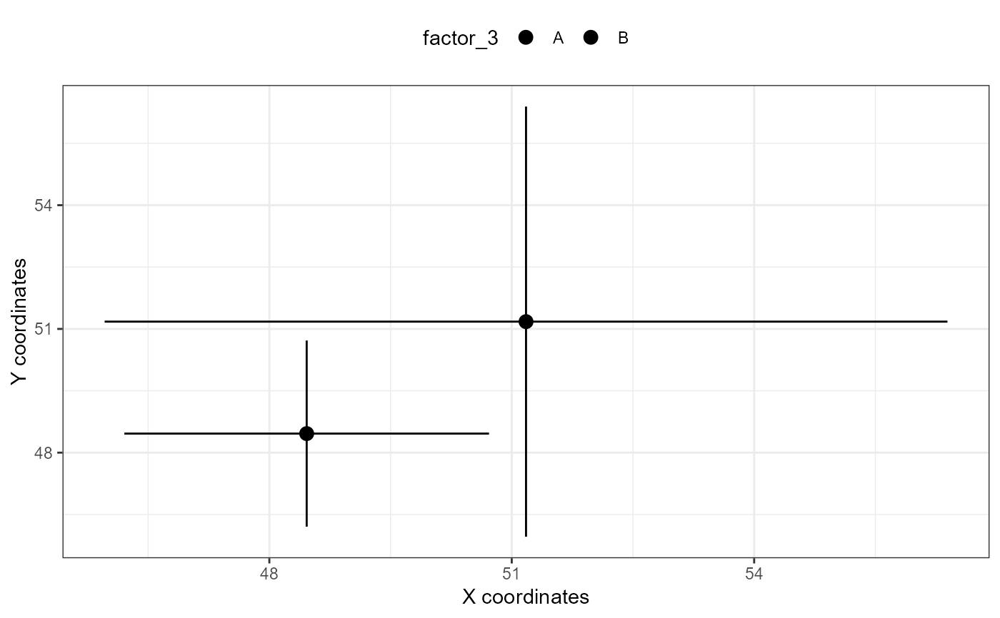
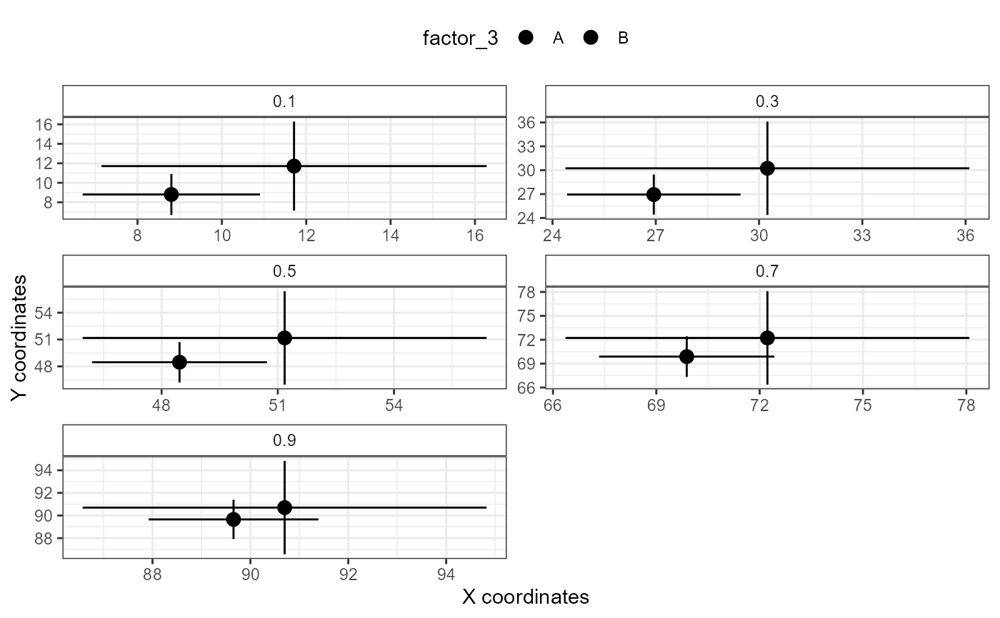
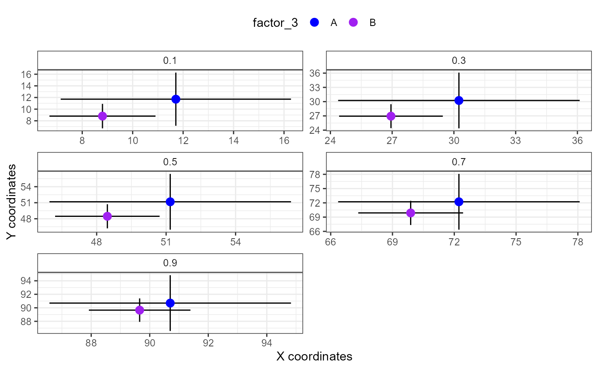

xy_plot.Rdxy_plot creates a point plot with confidence interval ranges using ggplot2. It combines the model estimates for the same predictor
in two (sets of) QGAMs, i.e. it displays estimates of X and Y coordinates simultaneously in a combined plot.
It makes use of mtqgam's better_parametric_plot and thus outputs the same information in your console.
xy_plot(
qgam_x,
qgam_y,
quantile = NULL,
pred,
cond = NULL,
print.summary = FALSE,
order = NULL,
ncol = 2,
xlab = "X coordinates",
ylab = "Y coordinates",
scales = "free",
size = 3,
color = NULL,
alpha = 1)The estimates plotted on the X axis. A qgam object created with qgam::qgam or extracted from a qgam::mqgam object, or a collection of qgams created with qgam::mqgam.
The estimates plotted on the Y axis. A qgam object created with qgam::qgam or extracted from a qgam::mqgam object, or a collection of qgams created with qgam::mqgam.
If qgam is a collection of qgam models, specify the quantile you are interested in. Not meaningful for single qgam objects.
The predictor term to plot. Note: This is no longer identical to the pred argument specified for itsadug::plot_parametric.
A named list of the values to use for the other predictor terms (not in view). Used for choosing between smooths that share the same view predictors.
Logical: whether or not to print summary.
Specify the order with which the levels given in pred should be plotted.
The number of columns of the multi-panel plot.
The x-axis label.
The y-axis label.
Should scales be free ("free", the default) or fixed ("fixed")?
Size argument for the ggplot object; specifies the size of points and lines.
Color argument for the ggplot object; specifies the color of points and lines.
Alpha argument for the ggplot object; specifies the transparency of points and lines.
A ggplot object.
Fasiolo M., Goude Y., Nedellec R., & Wood S. N. (2017). Fast calibrated additive quantile regression. URL: https://arxiv.org/abs/1707.03307
van Rij J, Wieling M, Baayen R, & van Rijn H (2020). itsadug: Interpreting Time Series and Autocorrelated Data Using GAMMs. R package version 2.4.
Wickham, H. (2016). ggplot2: Elegant Graphics for Data Analysis. Springer-Verlag New York.
# using a single qgam extracted from an mqgam object OR fitted with qgam::qgam
xy_plot(qgam_x = mtqgam_qgam,
qgam_y = mtqgam_qgam,
pred = "factor_3")
#> i Plotting predictor factor_3 with default order of predictor levels.
#> i Plotting predictor factor_3 with default order of predictor levels.

# using a qgam that is part of an mqgam object
xy_plot(qgam_x = mtqgam_mqgam,
qgam_y = mtqgam_mqgam,
pred = "factor_3")
#> ! Plotting all quantiles.
#> i Plotting with default order of predictor levels.
#> i Plotting with default order of predictor levels.

# specifying color
xy_plot(qgam_x = mtqgam_mqgam,
qgam_y = mtqgam_mqgam,
pred = "factor_3",
color = c("blue", "purple"))
#> ! Plotting all quantiles.
#> i Plotting with default order of predictor levels.
#> i Plotting with default order of predictor levels.

# combining better_interaction_plot with ggplot2
xy_plot(qgam_x = mtqgam_mqgam,
qgam_y = mtqgam_mqgam,
pred = "factor_3") +
theme_void() +
labs(subtitle = "This is a subtitle")
#> ! Plotting all quantiles.
#> i Plotting with default order of predictor levels.
#> i Plotting with default order of predictor levels.